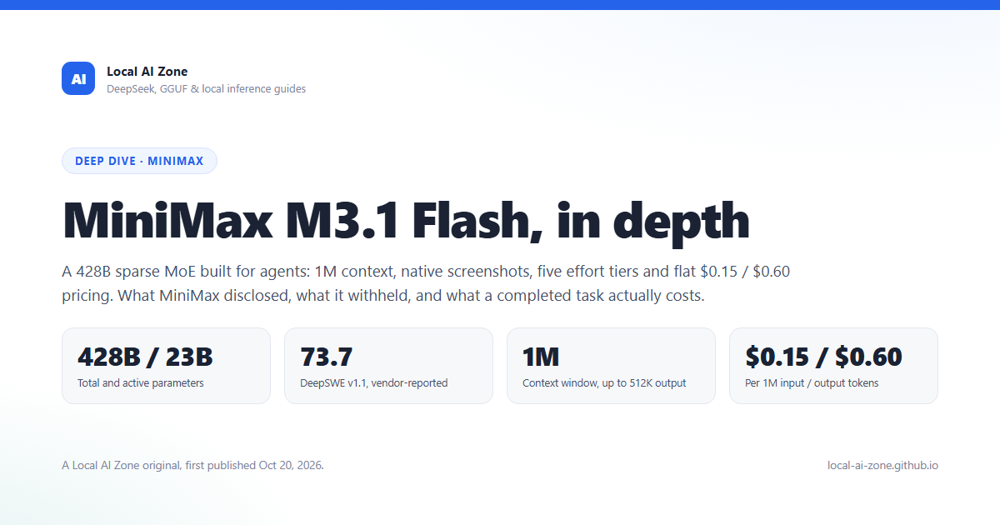

MiniMax M3.1 Flash
A 428B sparse mixture-of-experts model that spent its release on agentic work — coding, computer use, cybersecurity — and cut the price of a completed task by 70%. Here is what MiniMax disclosed, what it did not, and how the unit economics actually hold up.
Executive Summary
- What shipped: MiniMax M3.1 Flash went GA on October 19, 2026 across the MiniMax API, M Plan and MiniMax Code. It is the cheap, high-throughput member of the M3 family: 428B total parameters, roughly 23B active per token, native text/image/video input, 1M-token context and up to 512K output tokens.
- The stealth story: "Space Bunny," an anonymous model that processed more than 200 trillion tokens before anyone knew whose it was, was an early M3.1 Flash build. That is one of the largest unlabelled evaluations of a frontier-adjacent model on record.
- Benchmarks: 73.7% on DeepSWE v1.1, 61.7 on OSWorld V2, 29.6 on Agents' Last Exam, 82% on CyberGym and 76.2 on BankerToolBench. Coding and computer-use scores land within a few points of models that cost five to twenty times more per token.
- Economics: $0.15 input, $0.60 output and $0.015 cached input per million tokens, with no peak pricing and no long-context surcharge. At a 20:1 input/output ratio the blended rate is about $0.171 per million tokens.
- Throughput: 200+ tokens per second in normal use, with a P50 above 170 TPS — roughly triple the previous generation's online inference speed by MiniMax's own measurement.
- What is missing: No technical report, no parameter-level model card, no published evaluation harness, and no weights. M3.1 Flash is proprietary at launch, and several headline claims cannot be independently reproduced yet.
Contents
- What Actually Launched, and When
- Space Bunny: The 200-Trillion-Token Audition
- Architecture: M3's Sparse Backbone, Sharpened
- The Benchmark Record
- Five Reasoning Tiers and No Off Switch
- Unit Economics: What a Task Actually Costs
- Serving, Weights and the Local Reality
- Competitive Context
- Limitations and Open Questions
- Conclusion
- References
1. What Actually Launched, and When
MiniMax took an unusual route to market. On September 27, 2026 it silently made M3.1-Flash-Preview selectable inside MiniMax Code, its agent-oriented coding product. There was no model card, no pricing sheet and no benchmark table — developers noticed the entry in the model picker before the company confirmed it. The only disclosed parameters were a 1M-token context window and five reasoning-effort levels (low, medium, high, xhigh, max), with thinking permanently on.
Three weeks later, on October 19, the full release arrived: the model is now available through the MiniMax API, the M Plan subscription and MiniMax Code, with flat pricing and a proper launch post containing benchmark numbers. It is still not open weights. MiniMax says only that "model weights will be released later," and the launch post closes with a teaser that a higher-capability "Pro" tier is also coming.
Release Card: MiniMax M3.1 Flash
The naming deserves a note because it obscures the lineage. "Flash" here does not mean a small distilled model. M3.1 Flash keeps the same 428-billion-parameter envelope as M3; the differentiation is sparsity, post-training and serving efficiency. MiniMax's own phrasing is that it "further optimized M3.1 Flash's inference efficiency through more aggressive sparsity," which is a statement about how many parameters fire per token and how many tokens the model wastes per task — not about shrinking the checkpoint.
2. Space Bunny: The 200-Trillion-Token Audition
The most interesting detail in the launch post is buried in one sentence: "Space Bunny, which processed more than 200 trillion tokens while operating anonymously, was an early version of MiniMax M3.1 Flash." Stealth launches are common in 2026 — GLM's Ox Alpha preview was itself a disguised GLM-5.3 Flash — but the scale here is different. Two hundred trillion tokens is more than the entire pre-training budget of many frontier models, spent on a model nobody could attribute.
There are three practical consequences. First, the benchmark numbers should be read as post-trained results, not just architecture claims: the model had an unusually long real-world deployment window in which failure modes could be observed and trained against. Second, the community's model-attribution problem got worse. Arena scores and provider telemetry accumulated for "Space Bunny" have to be retroactively relabelled, and anyone who built routing rules around it now owns a migration. Third, the tactic itself is a signal about intent: MiniMax was not testing whether the model could win a launch-week comparison, it was testing whether it could survive production traffic before pricing was attached.
Why 200T tokens matters for the evaluation
Most benchmark tables measure a model under a fixed harness over a few thousand tasks. Two hundred trillion production tokens is a different kind of evidence: it exercises tool failures, malformed environments, long retry loops and context drift at a volume no academic suite can match. It is not reproducible evidence, but it is a plausible explanation for why the agentic gains in this release are larger than the architecture changes alone would suggest.
3. Architecture: M3's Sparse Backbone, Sharpened
MiniMax has not published a model card for M3.1 Flash, so the architecture has to be inferred from the M3 family, the preview documentation and provider metadata. What is consistent across those sources is a 428B-parameter, roughly 23B-active mixture-of-experts vision-language model. The M3 technical report describes the following backbone.
Inherited M3 Backbone (Disclosed for M3, assumed for M3.1 Flash)
3.1 MiniMax Sparse Attention
MSA is the architectural idea that made a 1M-token context economically viable in the first place. Instead of computing attention over every prior token, MSA first scores blocks of the KV cache with a lightweight indexer, then runs attention only over the blocks that survive. At the operator level each selected block is read once with contiguous memory access, which matters more than the asymptotic story: NVIDIA's measurements of M3 put per-token compute at 1/20th of the previous M2 generation at a 1M-token context, with 9× faster prefill and 15× faster decode.
For M3.1 Flash, MiniMax claims "more aggressive sparsity" without disclosing the block size, top-k budget or indexer design. If the M3 defaults carried over — a block budget on the order of a few thousand key tokens per query — then "more aggressive" likely means a smaller budget or a cheaper indexer, both of which reduce compute per token at the cost of recall on far-apart evidence. That trade-off is exactly what Flash tiers are for: most agent traffic reads a repository, a ticket and a handful of tool outputs repeatedly, and does not need pristine recall across a million tokens. The risk is the long-context needle-in-a-haystack case, and neither MiniMax nor any independent evaluator has published a 1M-token retrieval curve for M3.1 Flash yet.
3.2 Native multimodality, text-only output
M3 was trained on text, images and video from the first pre-training step rather than having a vision adapter bolted on later. M3.1 Flash inherits that input stack — the model accepts text, images and video, and produces text. That matters for computer-use agents, which constantly ingest screenshots, and for document workflows, where the alternative is a separate OCR pass. It does not mean the model generates images or video; the H3 line covers that.
3.3 What "Flash" changed
The honest answer is: less architecture, more post-training and serving. The parameter count is unchanged, the context ceiling is unchanged and the modality set is unchanged. The two measurable deltas are sparsity (fewer active compute paths per token) and output behavior (faster, shorter, more task-oriented). MiniMax reports 200+ TPS with a P50 above 170 TPS, and claims the model's "overall usage cost is 70% lower than its predecessor" for agentic tasks. A 70% task-cost reduction cannot come from the token price alone if the architecture is the same, so the claim bundles three effects: cheaper serving, shorter outputs, and fewer retries per completed task.
4. The Benchmark Record
MiniMax's launch post reports six numbers. Unlike the preview, which shipped with none, these are specific enough to compare — with the caveat that no harness, seed or attempt budget is disclosed. The table below pairs them with the closest site-tracked numbers for competing Flash-tier models. Cells marked with a dash were not published by that vendor.
| Benchmark | M3.1 Flash | DeepSeek V4.1 Flash | GLM-5.3 Flash | Qwen3.8 Flash-Next | Gemini 3.8 Flash |
|---|---|---|---|---|---|
| DeepSWE v1.1 | 73.7 | 77.0 | 63.4 | 58.7 | 71.0* |
| OSWorld V2 | 61.7 | — | — | 52.3† | — |
| Agents' Last Exam | 29.6 | 35.4 | 26.3 | 24.3 | — |
| CyberGym | 82.0 | — | 84.5 | — | Frontier-level‡ |
| BankerToolBench | 76.2 | — | — | — | — |
| AutomationBench-AA | Top tier (no score) | 60.5§ | 48.8§ | — | — |
| Input / output $/M | $0.15 / $0.60 | $0.15–0.30 / $0.60–1.20 | $0.15 / $0.50 | TBD | $0.75 / $3.75 |
* Gemini 3.8 Flash's 71.0 is on DeepSWE v1, not v1.1; the suites are not directly comparable. † Qwen reports OSWorld 2.0 partial (52.3) and binary (19.4), a different aggregation from MiniMax's OSWorld V2 number. ‡ Google reports frontier-level CyberGym performance without a scalar. § Automation-Bench v1.0.6, a different version from AutomationBench-AA. Sources: vendor launch posts and model cards, October 2026.
4.1 Reading the numbers honestly
Coding. DeepSWE v1.1 at 73.7 puts M3.1 Flash in the same band as DeepSeek's October refresh (77.0) and Gemini 3.8 Flash's v1 score (71.0), and comfortably ahead of GLM-5.3 Flash (63.4) and Qwen3.8 Flash-Next (58.7). DeepSWE is designed to punish models that can write a patch but cannot verify it, so a high score here is more informative than SWE-bench Verified, which is close to saturation in this tier.
Computer use. OSWorld V2 at 61.7 is the strongest number in the release relative to peers. MiniMax claims first place among Chinese models, and no competitor in this table has published a directly comparable OSWorld V2 figure. Qwen's 52.3 is an OSWorld 2.0 partial score, and mixing the two would be a category error. Treat 61.7 as a credible but unverified claim.
Agents' Last Exam. This is where the launch post becomes harder to defend. MiniMax says 29.6 ranks first among Chinese models, but DeepSeek's own V4.1 Flash card reports 35.4 on Agents' Last Exam, and even the September build reports 31.8. Either MiniMax is using a different version of the benchmark, a different scoring rule, or the claim is scoped to a subset of models. None of that is disclosed. The 29.6 number is not bad — it beats GLM-5.3 Flash (26.3) and Qwen3.8 Flash-Next (24.3) — but the superlative does not survive contact with the other vendors' published tables.
Cybersecurity. CyberGym at 82% is strong, and MiniMax says internal red-team evaluations covered code auditing, patching, penetration testing, malware analysis and reverse engineering. It is also not the highest number in the tier: GLM-5.3 Flash reports 84.5% on the same benchmark family. A two-and-a-half-point gap is within harness noise, but it means "leading" is doing marketing work in the launch post.
The benchmark verdict
M3.1 Flash is genuinely competitive on agentic coding and computer use, and its price makes those scores unusually accessible. But the release is a launch post, not a model card: no harness, no seeds, no attempt budget, no independent replication. The correct posture is "promising and worth piloting," not "proven frontier parity."
5. Five Reasoning Tiers and No Off Switch
M3.1 Flash exposes five reasoning-effort levels: low, medium, high, xhigh and max. MiniMax Code maps them to a picker; the API accepts a reasoning-effort parameter. Thinking cannot be disabled. That design choice separates MiniMax from DeepSeek, whose Flash line still offers a non-thinking mode, and from GLM, which also forces thinking on.
The practical implication is that every request pays a reasoning-token tax, even trivial ones. For a coding agent that is usually fine — the baseline cost is low enough that a few hundred thinking tokens do not change the budget — but for classification, extraction and high-volume chat it is wasteful. MiniMax's answer is to use low for those workloads, which shortens the thinking block rather than removing it.
| Workload | Suggested effort | Why |
|---|---|---|
| Bug fixes, small refactors, test writing | medium |
Enough budget to run the test loop without over-thinking single-file changes |
| Multi-file feature work, repository-scale tasks | high / xhigh |
The DeepSWE-class workloads where the model earns its score |
| Computer-use and OS-level automation | high |
Screenshot grounding plus retry loops benefit from more deliberation than chat |
| Security analysis, audit, exploit reasoning | xhigh / max |
Long evidence chains; the CyberGym profile rewards exhaustive checking |
| Classification, extraction, routing | low |
Thinking stays on, so keep the budget minimal; consider a non-thinking model instead |
One open question: the launch materials do not publish the token overhead per tier. In practice that is the number that determines cost. A max request that spends 8,000 thinking tokens to save 500 output tokens is a losing trade at any price, and without per-tier averages, teams should measure their own ratio before standardizing on a high effort level.
6. Unit Economics: What a Task Actually Costs
MiniMax's pricing is flat: $0.15 per million input tokens, $0.60 per million output tokens, $0.015 per million cached input tokens. There is no peak/off-peak schedule, no long-context multiplier and no batch discount listed at launch. That simplicity is itself a feature for budgeting: the same request costs the same amount at 3 a.m. and 3 p.m.
Because agents are input-heavy, the blended rate matters more than the sticker price. At a 20:1 input-to-output ratio — typical for a coding loop that re-reads a repository and emits a patch — the blended cost per million tokens is:
| Model | Input $/M | Output $/M | Blended $/M (20:1) | Relative to M3.1 Flash |
|---|---|---|---|---|
| MiniMax M3.1 Flash | $0.15 | $0.60 | $0.171 | 1.0× |
| GLM-5.3 Flash | $0.15 | $0.50 | $0.167 | 0.97× |
| DeepSeek V4.1 Flash (off-peak) | $0.15 | $0.60 | $0.171 | 1.0× |
| DeepSeek V4.1 Flash (peak) | $0.30 | $1.20 | $0.343 | 2.0× |
| Gemini 3.8 Flash | $0.75 | $3.75 | $0.893 | 5.2× |
The blended comparison is the fair one, and it produces a surprising result: M3.1 Flash is not the cheapest option in the tier. GLM-5.3 Flash is marginally cheaper at this ratio because its output price is lower, and DeepSeek V4.1 Flash matches M3.1 Flash exactly during off-peak hours. The differentiator is not the per-token price — it is whether the model finishes the task in fewer tokens and fewer retries.
6.1 A worked example
Consider a coding agent that reads a 100,000-token repository slice, emits a 5,000-token patch and does not retry. On M3.1 Flash the first turn costs:
- Input: 100,000 × $0.15 / 1M = $0.0150
- Output: 5,000 × $0.60 / 1M = $0.0030
- Total: $0.018 per turn
If 90% of that context is a stable prefix served from cache — the normal case in an iterative agent loop — the input cost becomes 90,000 × $0.015 / 1M = $0.00135 plus 10,000 × $0.15 / 1M = $0.0015, for a total of about $0.0059 per turn. The same workload on Gemini 3.8 Flash costs roughly $0.094 before caching, or about 16× more than the cached M3.1 Flash turn.
Now add the retry profile. If M3.1 Flash completes a task in 6 turns and a cheaper-looking competitor needs 9 because it fails verification twice, the effective cost per completed task reverses the sticker-price ranking. This is why MiniMax's "70% lower usage cost" claim is best read as a task-level claim, not a token-level one: the token price fell, but the bigger multiplier is fewer wasted turns.
Budgeting rule of thumb
For agentic coding, estimate 3–8 million input tokens and 150–400K output tokens per completed task at high effort. That lands between $0.54 and $1.44 per task on M3.1 Flash before cache effects, and well under a dollar with a warm prefix cache. Measure your own retry rate before scaling — it dominates the bill.
7. Serving, Weights and the Local Reality
At launch M3.1 Flash is API-only. MiniMax says the weights will be released later but has not committed to a date or a license. That is a reversal of the M3 playbook: M3 shipped open weights under the MiniMax Community License, and the local community built quantization and serving recipes around it within weeks. Until the Flash weights appear, the only way to run it is through MiniMax's endpoints, and the only way to audit it is through its outputs.
When the weights do arrive, the hardware math is unforgiving. The model is 428B parameters in total, and even though only ~23B activate per token, every expert must be resident somewhere. That produces the following planning envelope:
| Precision / format | Weight footprint (est.) | Realistic hardware |
|---|---|---|
| BF16 | ~856 GB | Multi-node H200/B200 deployment |
| FP8 / MXFP8 | ~428 GB | 8× H200 or 4× B200 with expert parallelism |
| NVFP4 | ~214 GB | 4× B200 / GB300 class, TensorRT-LLM or vLLM with FP4 kernels |
| Q4-class GGUF | ~220–240 GB | 512 GB RAM workstation or 4× 80 GB GPUs; quality loss on long-context recall |
| Q2-class GGUF | ~120–140 GB | 256 GB RAM server; not recommended for agentic work |
Two serving details are likely to matter more than raw memory. First, MSA is not a standard attention kernel: M3 required custom support in SGLang, vLLM and TensorRT-LLM, and "more aggressive sparsity" in the Flash build may require newer kernels than the ones shipped for M3. Second, the vision tower adds activation memory on screenshot-heavy workloads, so computer-use agents need more headroom than text-only benchmarks suggest.
For local-AI readers the honest summary is: this is not a workstation model. The practical local story is the same as M3's — watch the GGUF and NVFP4 ecosystem after the weights drop, and expect the interesting builds to target 4× B200 or 8× H200 servers, not single GPUs. If you need a local agentic model today, the 125B–320B Flash class remains the realistic ceiling, and even those need aggressive quantization.
8. Competitive Context
M3.1 Flash lands in the most crowded segment of the 2026 market: the "near-frontier agentic model at a commodity price" tier. Its direct rivals are DeepSeek V4.1 Flash, GLM-5.3 Flash, Qwen3.8 Flash-Next and Gemini 3.8 Flash, each with a different trade-off.
- DeepSeek V4.1 Flash is the closest functional substitute: similar price, higher DeepSWE and ALE scores, but a peak/off-peak pricing schedule and a very different architecture (causal encoder-decoder with an aggressively compressed KV cache). It is the better default for pure coding if you can schedule around peak hours.
- GLM-5.3 Flash matches on price, leads on CyberGym (84.5) and GDPval-AA, and has open weights under a permissive license. It is the stronger choice for finance, legal and security workflows where domain benchmarks matter more than DeepSWE.
- Qwen3.8 Flash-Next is smaller and cheaper to serve (125B + 51B N-gram, 6B active) and strong on multimodal benchmarks, but trails badly on DeepSWE (58.7). It is the efficiency play, not the capability play.
- Gemini 3.8 Flash costs five times more per blended token but brings Google's tooling, safety stack and a much stronger single-shot reasoning profile. It remains the safer choice for regulated deployments.
The strategic read is that MiniMax is no longer competing on being the cheapest. At $0.15/$0.60 it is at parity with DeepSeek's off-peak rate and slightly more expensive than GLM on output. What it is selling is throughput and task completion: 200+ TPS, a 1M context, native screenshots, and a model tuned to keep going until the test passes. That is a product bet, not a price bet, and it explains why the release was folded into MiniMax Code first.
9. Limitations and Open Questions
No model card. The launch post is a marketing document with six numbers. There is no technical report, no architecture diagram for the Flash variant, no training-token count, no data mixture and no evaluation harness. Claims about "more aggressive sparsity" cannot be checked.
No independent benchmarks. At publication time, third-party evaluators had not published M3.1 Flash results. Vendor-reported numbers on DeepSWE and OSWorld are useful for triage but not for procurement decisions. The ALE discrepancy with DeepSeek's published 35.4 is a concrete example of why.
Always-on thinking. Every request pays a reasoning tax. For high-volume extraction or classification this is a structural cost disadvantage against models with a non-thinking mode, and per-tier token overhead is not published.
Proprietary at launch. No weights means no local deployment, no fine-tuning, no audit and no ability to pin a version. MiniMax's history suggests weights will come, but the license and timeline are unknown, and the M3 Community License already carried territorial restrictions that matter to some teams.
Benchmark scope. The six disclosed benchmarks are all agentic or security-oriented. There is no MMLU-Pro, GPQA, HLE or long-context retrieval number. That is consistent with the positioning — this is a work model, not a trivia model — but it means the model's ceiling on knowledge-heavy tasks is unknown.
10. Conclusion
MiniMax M3.1 Flash is the clearest example yet of a 2026 pattern: the Flash tier is where the real competition moved. The flagship releases get the attention, but the models that change engineering budgets are the ones that deliver 70–80% of frontier agentic performance at 5–20% of the price. M3.1 Flash does that with a 428B sparse backbone, a 1M context, native screenshots and a flat $0.15/$0.60 rate, and it backs the pitch with credible DeepSWE and OSWorld numbers.
It is not a clean sweep. DeepSeek V4.1 Flash still leads on DeepSWE and Agents' Last Exam, GLM-5.3 Flash matches it on price with open weights, and the missing model card makes every headline number provisional. But the direction is unmistakable: MiniMax built a model for agents that run for hours, priced it for teams that run thousands of them, and tested it anonymously on 200 trillion tokens before asking anyone to trust the benchmark table.
For builders, the practical move is a contained pilot: route repository-scale coding and screenshot-driven automation to M3.1 Flash at high effort, keep a second provider in the fallback path, and measure cost per completed task rather than cost per token. If the retry numbers hold, the 70% claim stops being marketing and starts being an accounting fact.
11. References & Citations
- MiniMax, "MiniMax M3.1 Flash: Redefining Agent Performance and Cost," official launch post, minimax.io/blog/minimax-m31f, October 19, 2026.
- MiniMax, "M3.1-Flash-Preview: Coding & Research," MiniMax Agent tools documentation (428B total / ~23B active MoE, sparse attention, visual encoder), agent.minimax.io/tools/m3-1-flash-preview, accessed October 20, 2026.
- MiniMax-AI, "MiniMax-M3" model card and technical report (428B total / ~23B active, 60 layers, 128 experts, MSA), GitHub and arXiv:2606.13392, June 2026.
- NVIDIA, "Deploy Long-Context Reasoning and Agentic Workflows with MiniMax M3 on NVIDIA Accelerated Infrastructure" (MSA efficiency, 1/20 compute, 9× prefill, 15× decode, NVFP4), developer.nvidia.com, June 12, 2026.
- LLM Stats, "MiniMax M3.1 Flash: Benchmarks, Pricing & Context Window" (1M input / 524K output, $0.15/$0.60/$0.015, multimodal input), llm-stats.com, accessed October 20, 2026.
- OpenCode Data, "MiniMax AI Model Usage & Rankings" (M3.1 Flash release date, 1M context, 512K max output, token share), opencode.ai/data/minimax, October 19, 2026.
- Local AI Zone, "DeepSeek V4.1 Flash 1017: Wish-Driven Programming Deep Dive" (DeepSWE 77.0, ALE 35.4, pricing), October 17, 2026.
- Local AI Zone, "GLM-5.3 Flash Deep Dive" (DeepSWE 63.4, CyberGym 84.5, Automation-Bench 48.8), October 2026.
- Local AI Zone, "Qwen3.8 Flash-Next Deep Dive" (DeepSWE 58.7, ALE 24.3, OSWorld 2.0 partial 52.3), October 2026.
- Local AI Zone, "Gemini 3.8 Flash Technical Breakdown" (DeepSWE v1 71.0, $0.75/$3.75), September 2026.
